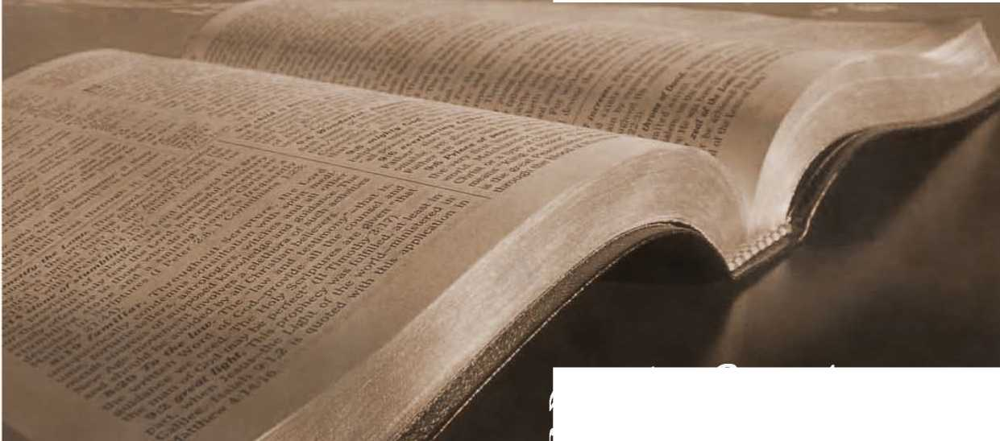

No. 10—A Broad Basis for True Christian Union. Contend Earnestly for the Faith Once Delivered to the
- Saints
pibl^§tud^nts'
©ED T]4E©E®@Y.
A BROAD BASIS
FOR
CONTEND EARNESTLY
FOR
ONCE DELIVERED
TO
Stand Fast in the Eiberty Wherewith F
Christ makes Free. Be not agair]
No. lo—July, 18gi.
ENTERED AS SECOND-CLASS MAIL MATTER, AT THE POST-OFFICE, ALLEGHENY, PA.
PROMOTION OF CHRISTIAN KNOWLEDGE.
No. i. Do the Scriptures Teach that Eternal Torment is the Wages of Sin?
No. 2. Calamities— Why God Permits Them.
No. g. Protestants, Awake! How Priestcraft now Operates.
No. 4. Dr. Talmage's View of the Millennium.
No. j. Bible Study and Students' Helps.
No. 6. The Hope of the Groaning Creation.
No. p The Wonderful Story—The Old, Old Sto,
No. 8. The Wonderful Story—with ig Illustration
64 pages, special; Price 10 dis.
No. g. Swedish Tract; subjedt matter same as No. 1.
No. 10. A Broad Basis for True Christian Union.
No. 11. Teachings of the Tabernacle; ioc.—Ready soon.
We specially commend, both to honest skeptics and to saints, “ The Plan of the Ages.” No other book of its size, known to us, so fully unfolds the divine plan revealed in the Scriptures. It is a veritable “ Bible Key,” and is well described as “A Helping Hand for Bible Students.” We can supply it by mail, cloth bound, for $x, or in paper covers for 25 cents ; or we will loan it to the poor, who will promise a careful reading and to pay return postage.
We supply a large line of Bibles with and without Teachers’ Helps, at cost prices. Send for descriptive Price List, free.
. ADDRESS ORDERS TO
Tower ?3ible & Vract Society,
“BIBLE HOUSE,” ARCH ST.,
ALLEGHENY, PA., U. S. A.
CONTEND EARNESTLY
FOR
One Lord, One Hope, One Baptism, One God and Father, and One Church.
“We trust in the living God, who is the Savior of all men—specially [or most fully and everlastingly] of ■ those that believe.”—i Tim. 4: 10.
“To us there is but one God, the Father, of whom are all things, and we in him; and one Lord Jesus Christ, by whom are all things, and we by him.”—1 Cor. 8: 6.
All ye are brethren, and one is your Master, even Christ. (Matt. 23: 8.) Your Master declares: “If ye keep my commandments ye shall abide in my love, even as I have kept my Father’s commandments and abide in his love.” “And this is his commandment, that we love one another.” “We ought to lay down our lives for the brethren”—serving them—especially with the spiritual food and clothing which God’s Word supplies.
LET US SEEK TO WALK
Worthy of the vocation wherewith we are called, with all lowliness and meekness, with longsuffering, forbearing one another in love; endeavoring to preserve the
unity of the spirit [oneness of mind] in the bond of peace. There is ONE body [Church], with one spirit [one sentiment or disposition], even as we are called in ONE hope of our calling; one lord, one faith, one BAPTISM, ONE GOD AND FATHER OF ALL, who is above all and through all and in us all.—Eph. 4: 1-6.
& THE ONE BODY
is “the Church of the living God, the pillar and support of the truth“the Church of the first-born” whose “names are written in heaven;" the “little flock,” to whom it is the Father’s good pleasure to give the Kingdom; the members in particular of the body of Christ; prospectively, Christ’s Bride and joint-heir; the “Seed of Abraham,” of which our Lord Jesus is Head.—Eph. 1: 22.
This one Church includes all the fully consecratedX-,^-lievers in the redemption which is provided in Christ Jesus, from Pentecost until the completion of this one body in the end of the Gospel age. Since Pentecost this Church of Christ has been in process of selection from among justified believers, or the general “household of faith;” and its members, when complete and glorified, unitedly will inherit the Abrahamic promise and bless all the families of the earth.—Gal. 3:16, 29.
THE ONE SPIRIT
is the spirit of the Truth, the spirit which is of God, the spirit of adoption as sons of God, which actuates and governs all who are of the one body, in vital union with the one Head, Christ Jesus. It is the spirit of holiness, and chief among its fruits is Love—the bond of perfectness.
THE ONE HOPE
which inspires all the members of the one body of Christ, who have the one spirit of the Truth, is “the hope set before us in the gospel,” arid not hopes suggested from our own or other men’s imaginations or conjectures. The one hope is a “good hope” (2 Thes. 2: 16), a hope of eternal life by a resurrection. (Titus 3 : 7.) The ground of this hope is found in Jehovah’s promises, confirmed unto us by the death of our Lord Jesus as the ransom price for our sins, and by his resurrection from the dead for our justification.—I Pet. 1:3; Acts 17:31.
THE ONE LORD
is the Head or Chief of the one body—his one Church, possessing the spirit of the Truth and actuated by the one hope of becoming his Bride and joint-heir. He and his Father are one, even as he and his church are one. (John 17: 11.) He is the Redeemer of his church, as well as her Lord, Exemplar and Master. And he is the Redeemer also of the whole world, and by virtue of that office he is to be the world’s Deliverer from Adamic sin and death. He it is who in all things has the pre-eminence in Jehovah’s plan and work. He was not only “the beginning of the creation of God,” “the first-born of every creature,” but more: he was the “ beginning and the ending,” he was the “Alpha and the Omega, the first and the last,” of Jehovah’s direct creation; for all other “ things were made by him, and without him was not anything made that was made.” (Col. I : 15, 18; Rev. 3:14; 1:8; 21:6; 22 : 13; John I : 3.) He it is who, to carry out the Father’s gracious plan, willingly left the
glory which he had with the Father before the world was created, and became a man-—-a little lower than the angels—that he might, as a man, present himself in sacrifice for the sins of man. Thus we behold him as the “ Mediator between God and men, the man Christ Jesus, who gave himself a ransom for all.” (I Tim. 2 : 5, 6.) By his willing sacrifice of himself for men he bought Adam and the entire race condemned through his fall. Thus he became Lord of all—not only of the living, but also of the dead—with full power and authority to awaken all, and to restore all that was lost in Adam, to such as will accept of the New Covenant of divine favor which, by his death, he sealed and made effective to all.
However, our Lord is no longer in the flesh—he is no longer a human being. He has finished the work of ransoming us, for which the taking of the flesh was needful. He was indeed put to death in the flesh, but was quickened [made alive] in the spirit. “ Though we have known Christ after the flesh, yet henceforth we know him [so] no more.” As he was begotten of the spirit at his baptism, so he was born of the spirit at his resurrection; and “that which is born of the spirit is spirit.” “Now the Lord is that spirit.” (1 Pet. 3 : 18; 2 Cor. 5 : 16; John 3: 6; 2 Cor. 3 : 17.) Because he showed his obedience to the Father, and his confidence, in that he humbled himself to become a man and tasted death for every man, therefore God highly exalted him —far above manhood, far above the angelic nature, even far above his own previous glorious station—and gave him a name [title] above every name, that at the name of Jesus every knee should bow and every tongue confess, to the glory of God the Father. He made him partaker of the divine nature and honor, “ that all men should honor the Son even as they honor the Father.” “He is Lord of all.”—Phil. 2:8-11; John 5 : 22,23, 26; Adis 10: 36.
THE ONE FAITH .
is, that we w'ere reconciled to God by the death of his Son, who died for our sins, the just for the unjust, to bring us to God—through whom we have accepted the at-one-ment with God, offered unto us. Wherefore, we have peace with God through our Lord Jesus Christ; being cleansed by his blood [sacrifice], we are brought nigh to God and are no longer strangers and foreigners, but children, and heirs of his favors prepared for those who love him when brought nigh through the precious blood. Through this faith we grasp the exceeding great and precious promises of God as rapidly as we see them, and gladly appropriate them to ourselves. Faith anchors our hearts securely to the precious things of the future, unseen as yet except to the eye of faith. The power of God to every one that believeth is communicated through faith.
THE ONE BAPTISM.
Those of the one body and one hope, joined to the one Lord, possessing the one faith, are all baptized or immersed into Jesus Christ. (Rom. 6:3.) As individuals they have reckonedly ceased to exist: henceforth, for them to live is for Christ to live. With their wills buried or immersed into the will of Christ, they thenceforth live not unto themselves, but unto him that bought them with his own precious blood. Their own wills are dead, and henceforth they recognize only the will of the one Lord, the Head of the Body, which is his Church, whose names are written in heaven. Justified believers attain membership in this Church of Christ through this burial or immersion of their hearts, their wills, into the will of Christ. And as the ‘Apostle further declares, this immersion of our wills (our selves) into Christ is acceptable only when it is an immersion even unto death —an entire, a complete immersion forever. “Know ye not that so many of us as were immersed into Jesus Christ were immersed into his death ? Therefore we are buried with him by immersion into death; that like as Christ was raised from the dead by the glory of the Father, we also [from the time of our consecration, the immersion of our wills into that of the one Lord,] should walk in newness of life. For if we have, been planted together in the likeness of his death, we shall be [sharers] also in (he likeness of his resurrection” —the first resurrection, to be with him and like him, partakers of the divine nature. (Rom. 6:3-5; Phil. 3 : 10, 11.) This is the only real baptism, of which immersion in water is the beautiful and appropriate symbol commanded and exemplified by our Lord and thf1 apostles, but applicable to and rightly understood by such only as have experienced a full immersion of their wills into the will of God and Christ.
A sample of our tract on “ Bible Study and Students’ Helps” will be sent free on application.
Address TOWER BIBLE & TRACT SOCIETY, . “BIBLE HOUSE,” ARCH ST.,
ALLEGHENY, PA., U. S. A.